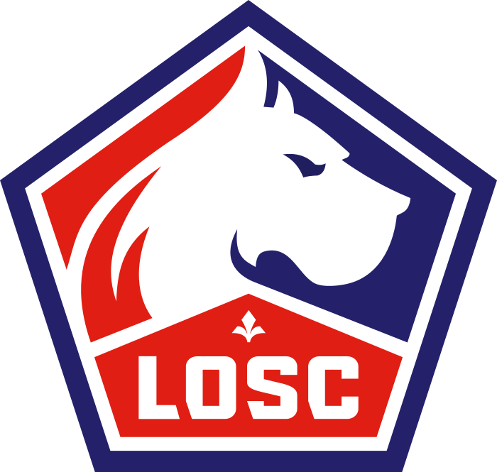
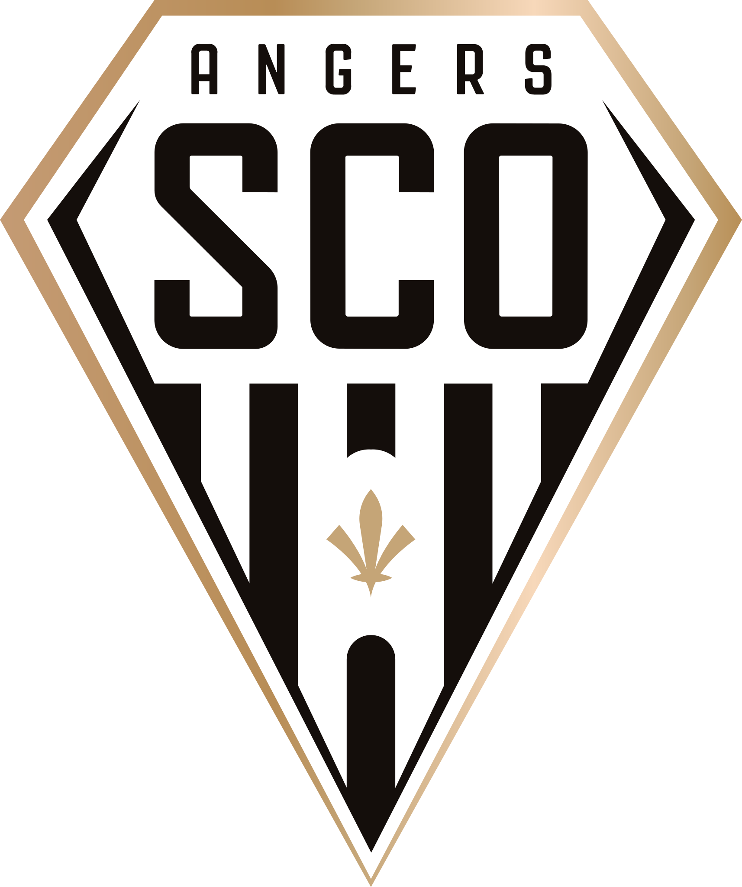
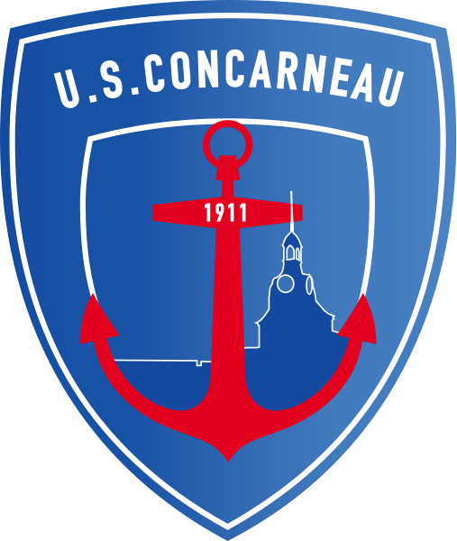
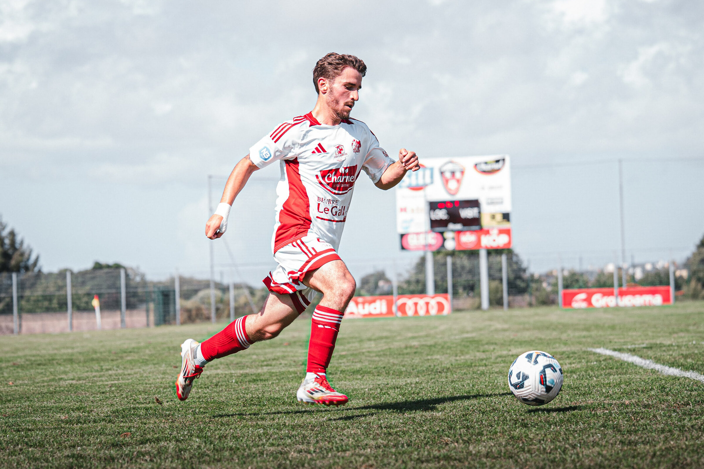
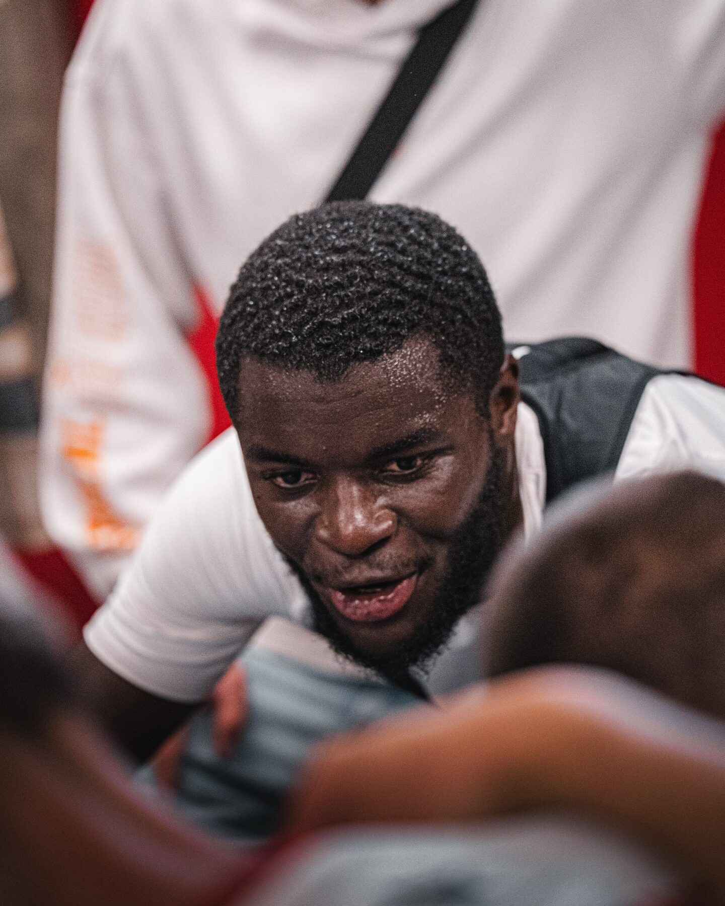
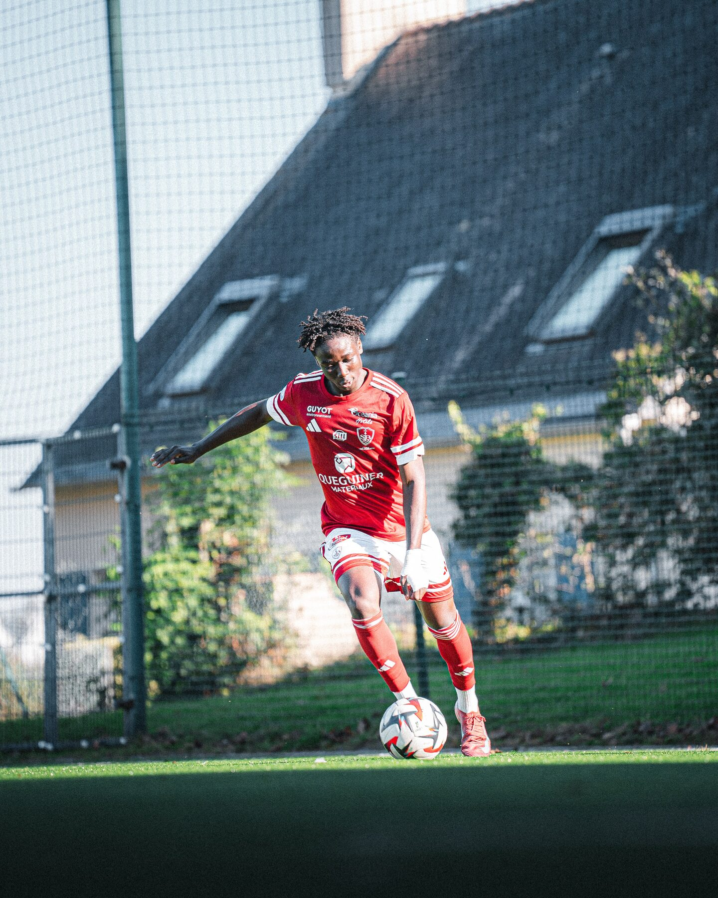
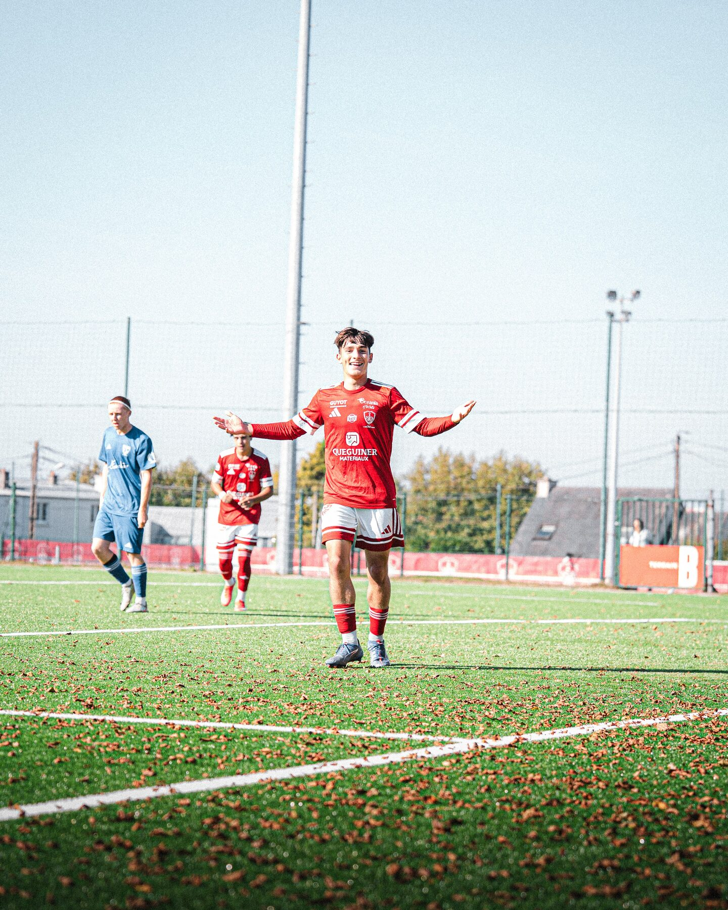
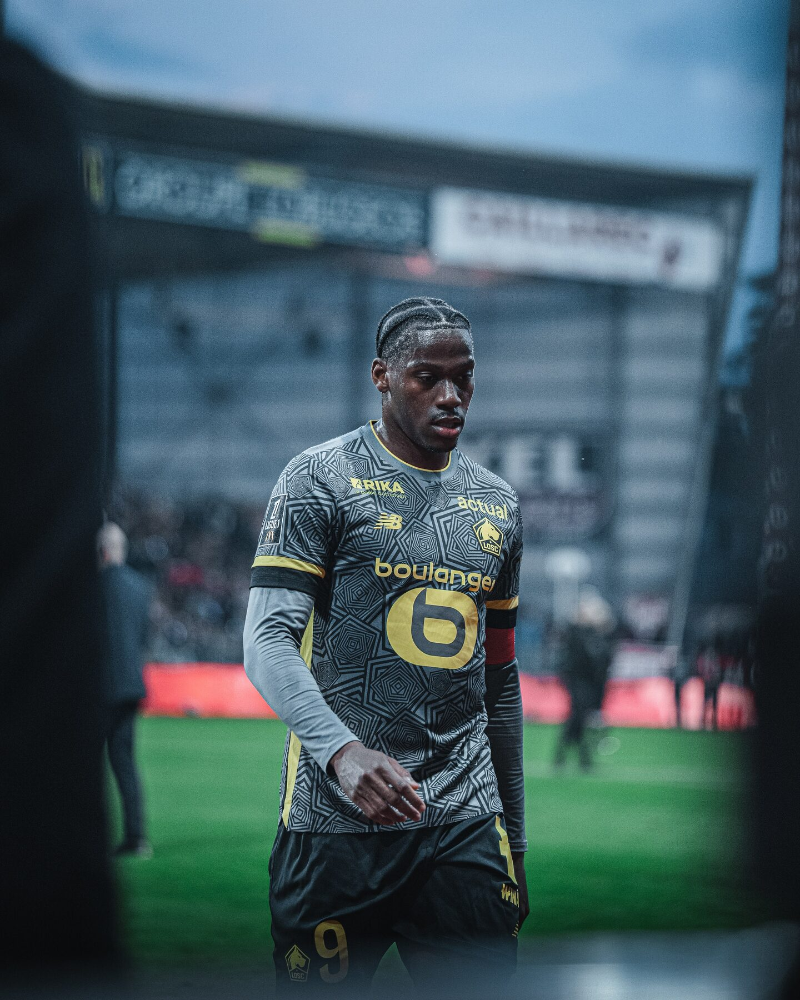
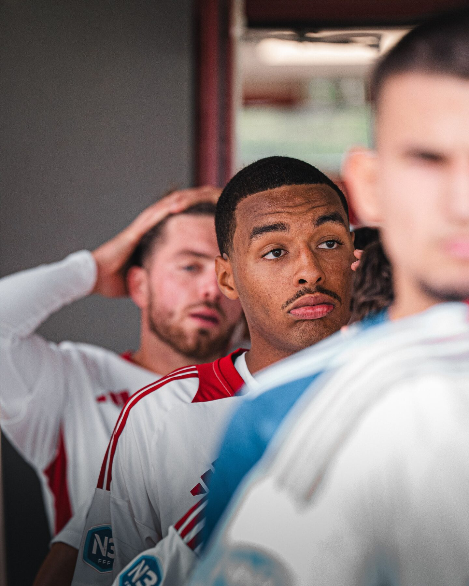

L'ancrage brestois
Né à Brest, lycée à Landerneau, BTS à Brest. Je connais la ville, le bassin, les codes du Finistère. Le SB29, je le vois jouer.
Je présente ma candidature au poste de photographe du Stade Brestois 29 pour la saison 2026 / 2027. Né à Brest, formé à Brest, trois saisons d'alternance en Finistère - je souhaite mettre mon travail au service du club, à temps plein, en intégrant la cellule communication.
Je n'écris pas cette page parce que j'ai vu une annonce. Je l'écris parce que vivre à Brest, c'est suivre les Ty-Zefs depuis Francis-Le Blé - et parce que mon parcours m'a permis de construire un travail que j'aimerais aujourd'hui mettre à disposition du club, à temps plein, sur une saison entière. Trois arguments, simples et vérifiables.
Né à Brest, lycée à Landerneau, BTS à Brest. Je connais la ville, le bassin, les codes du Finistère. Le SB29, je le vois jouer.
Trois saisons d'alternance au Stade Plabennécois (N3), collaboration avec l'Olympique de Marseille, missions ponctuelles avec d'autres clubs pros. Un parcours qui m'a préparé à travailler dans un environnement exigeant.
Basé à Brest. Présence facile à Francis-Le Blé et autour du club. Réactif et flexible selon votre calendrier.
En intégrant la cellule communication, voici les quatre axes sur lesquels je m'engage à produire pour le club tout au long de la saison. Modulables selon les priorités, le calendrier et vos partenaires médias.
Reportage photo sur la rencontre : action, duels, émotions du terrain et du banc. Format adapté au brief et au calendrier de publication du club.
Photos pensées pour Instagram, X et TikTok. Formats verticaux, séries cohérentes, respect de l'identité visuelle du club.
Séances dédiées pour campagnes saison, arrivées, partenariats. Direction artistique pensée avec la cellule communication, en studio ou sur les lieux du club selon le projet.
Échauffement, banc, coulisses - le format long qui raconte le club au-delà du score. Périmètre défini ensemble selon les accès accordés.
MGR Studio · Indépendant
Reportages match, portraits, contenu réseaux pour clubs pros, joueurs et médias. Collaboration Olympique de Marseille.
Stade Plabennécois Football · National 3
Trois saisons complètes en environnement compétition : couverture matches, communication, presse, identité visuelle.
Stratégie de marque, contenu, identité
Diplômé à Brest. Formation à la communication multi-canal, pensée pour les structures.



Huit images choisies pour donner le ton. Le portfolio complet - match, émotions, off-field - est accessible ici.








Un entretien au centre de l'Armoricaine, un café à Brest, un échange en visio - je m'adapte. Si un recrutement n'est pas envisagé immédiatement pour la saison à venir, je serai heureux d'être recontacté à l'occasion d'une prochaine ouverture de poste.